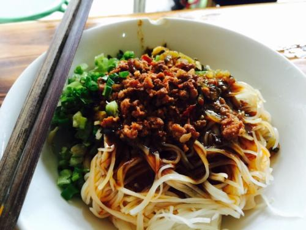

-
宣威火腿
宣威火腿，云南省著名地方特产之一，因产于宣威而得名。它的主要特点是：形似琵琶，只大骨小，皮薄肉厚肥瘦适中；切开断面，香气浓郁，色泽鲜艳，瘦肉呈鲜红色或玫瑰色，肥肉呈乳白色，骨头略显桃红，似血气尚在滋润。其品质优良，足以代表云南火腿，故常称“云腿”。宣威火腿的历史悠久，最迟始于明代。20世纪初，浦在廷等人集资兴办“宣和火腿公司”，引进机械设备制作火腿罐头，继而“云南宣威浦在廷兄弟食品罐头有限公司”成立，其产品于1923年参加广州等地赛会受到各界的好评。孙中山先生为其题词“饮和食德”，从此名声大著，远销香港、新加坡等地。
-
麻衣馓子
麻衣馓子是以小麦面、白砂糖为原料而制成的的油炸类糕点，其状如“千钧扣”，色泽金黄，表层为芝麻糖衣，内里灌满糖饴，味道甜润而柔腻。陆良麻衣馓子以其“香、脆、酥、甜”的特点而闻名，距今已有200多年历史，是陆良县地方传统风味食品，也是馈赠亲友的佳品。
-

陆良板鸭
曲靖市陆良县是云南省第一大坝子（平原之意），有“鱼米之乡”的美誉。陆良大坝子的南盘江蜿蜒似带，缓缓流过。陆良水资源丰富，江河沟渠纵横，密如珠网一般，加之这里四季如春，是养鸭难得的好地方。陆良腊鸭，也就是我们说的板鸭，是选用壮而肥的仔鸭宰杀后，用适量食盐腌制而成的，每只重2公斤左右，造型为杏仁形，挂于室外清洁、干净、阳光充足和干燥通风的烤鸭架上，风吹日晒，数日后晒干即成板鸭。腊鸭独具特色，色白无毛，盐味适中，肉质细嫩，营养丰富，味道鲜美，是广大消费者喜爱的一种食品。每逢节假日，人们取来板鸭或蒸或煮。用来下酒。有人甚至用红纸把板鸭包起来，作为馈赠亲朋好友的礼品。陆良板鸭，尤其受港澳同胞、海外华侨和国际友人的青睐，从1959年起，陆良腊鸭就远销外地，在国内外市场上享有一定的声誉。70年代中期，最高年产量达150吨，在我省腊鸭出口中占有重要的地位。
-
沾益辣子鸡
沾益辣子鸡是中国著名餐饮特产，是滇菜代表作，也是曲靖、沾益的宣传名片，产于云南省曲靖市沾益县西平镇，有百年历史，因其选料精殊挑剔、制作道序复杂、味道辣香爽口而名震四海。较具代表性的是龚氏辣子鸡。与川渝地区配上花椒的麻辣不同，和湖南生吃辣椒的豪爽相异，能仅靠一道菜打出“辣”名声的小地儿，恐怕只出在滇中的沾益县--中国第三大江珠江之源、著名人物桂涛声、陈家顺的家乡。说起滇菜，沾益辣子鸡绝对不容小觑，自上世纪被沾益“龚”氏家族推广出来到现在，其发展历程已经走过了几十个年头，如今，沾益辣子鸡早已名满天下，广为流传。在就餐时配上苦菜汤、炸好的洋芋条和臭豆腐，不奢华、不张扬，但沾益辣子鸡绝对能让众食客辣得舒服，吃得安逸。 [1] 沾益辣子鸡，是滇菜的代表作，其独特的原料、独特的配方、独特的加工工艺，辣而不辛、食和味醇，致使名振滇中，享誉海内外，是为西南乃至中国最出色的菜肴之一，招牌在中国西南地区乃至更远处都随处可见，可谓“不吃辣子鸡，白来彩云南”。
-

蒸饵丝
蒸饵丝是云南省曲靖市的一道特色小吃，这道小吃的时间可以追溯到上个世纪80年代。曲靖蒸饵丝的主料为当地产的筒子饵块。它是用曲靖沿江、珠街一带产的优质稻米，按传统工艺加工而成的。该小吃可谓是中国独有的一道小吃，享誉大西南。曲靖蒸饵丝的调配料非常丰富，而且相当考究。首先是选用新鲜的韭菜和绿豆芽，还有专门熬制的酱油和精心炒制的肉酱。熬制酱油时，要配一定比例的香料，熬至浓稠且出味后，再起锅装入容器里备用。肉酱所选用的是新鲜的猪前夹后腿肉，剁细后再与酱料炒成肉酱。蒸饵丝所用的酸菜，是自家精心腌制的，而做油辣子的辣椒来自邱北，花椒来自四川西昌，还有广西出产的八角、草果，福建出产的优质香菇，河南出产的水洗芝麻等等。此外，曲靖越州镇横大路出产的红皮大蒜，也在其中扮演着重要角色。当然，精盐、白糖、味精等也是不可缺少的调料。